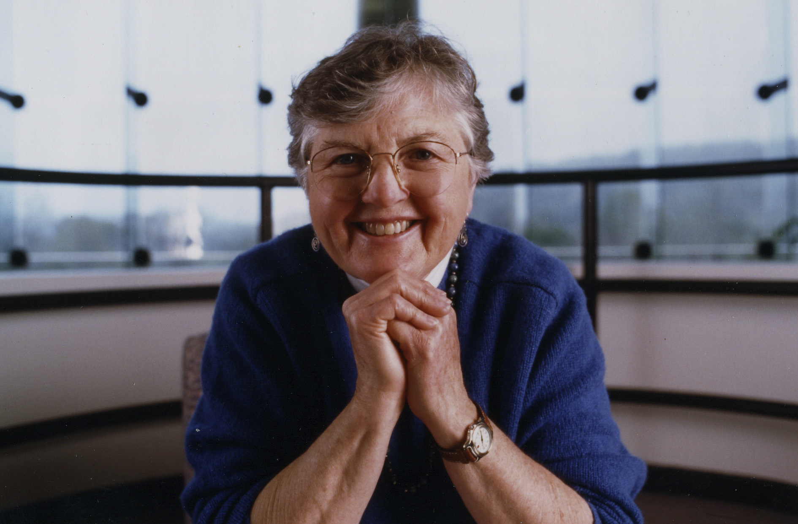

Fran Allen's focus has not been on inventing new programming languages or language features and then trying to get people to program using them. Rather, she focused on taking programs as programmers like to write them, and made them run efficiently by doing sophisticated analysis and optimization of the code. She didn’t create paper designs, but a series of working systems that run real programs, not just artificial benchmarks, faster. Today's programming language compilers still rely on techniques that she pioneered.
Awards
- 1989 IBM Fellow
- 1994 ACM Fellow
- 2002 Ada Lovelace Award
- 2004 Computer Pioneer Award
- 2006 Turing Award
- 2010 Member of the National Academy of Science